| Topic | Notes / Diagram / Interview Points |
|---|---|
| SQL vs NoSQL |
Key Concept:
I wouldn't choose between SQL and NoSQL simply based on scale or
whether the data is structured. I'd first look at the data model
and access patterns, then consistency, transaction and data-integrity
requirements, followed by throughput, latency, availability and
scalability requirements.
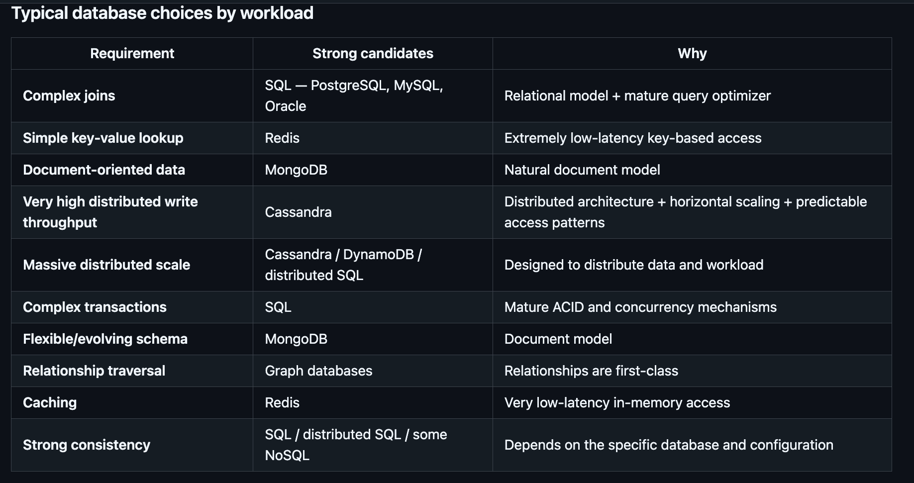 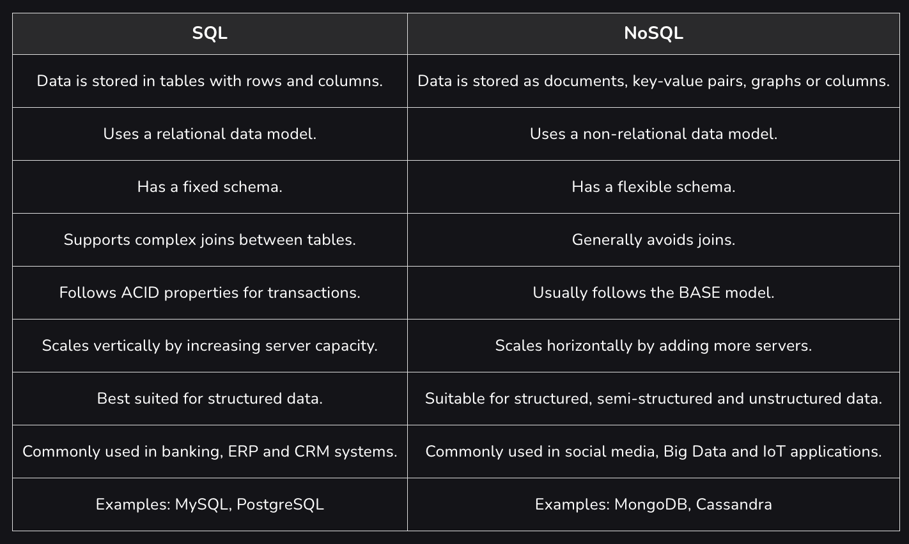 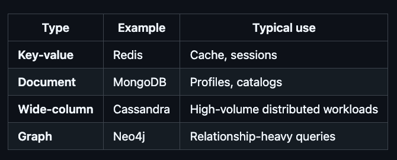 |
| Indexing |
Definition:
An index is an additional data structure maintained by the database
to make queries faster. Instead of scanning every row, the database
can use the index to locate relevant rows efficiently.
B-Tree indexes are commonly used for equality, range, and ordering
queries. The trade-off is that indexes consume additional storage
and add overhead to inserts, updates, and deletes.
Interview Point:
For composite indexes, column order matters because of the
leftmost-prefix behavior, so indexes should be designed based on
the application's actual query patterns.
|
| Replication |
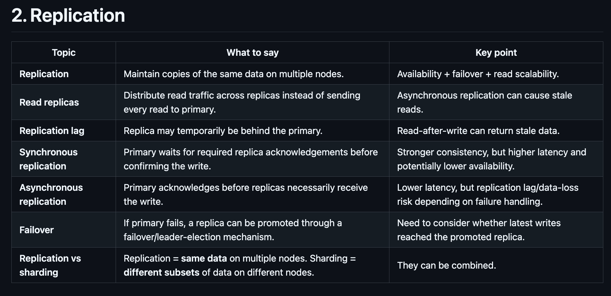 |
| ACID |
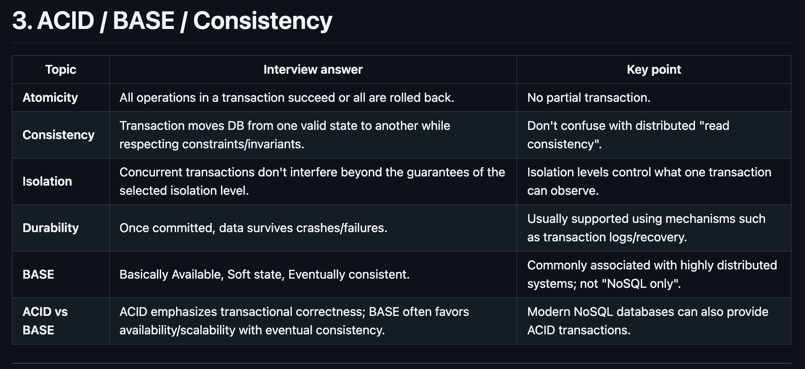 |
| PACELC |
Partition:
Choose Availability or Consistency.
Else:
Choose Latency or Consistency.
|
| Isolation Levels |
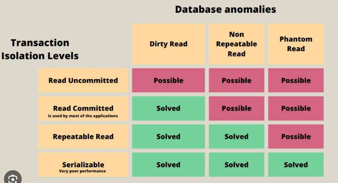 |
| Normalization |
Organizing data into multiple related tables to reduce data
duplication and avoid data anomalies.
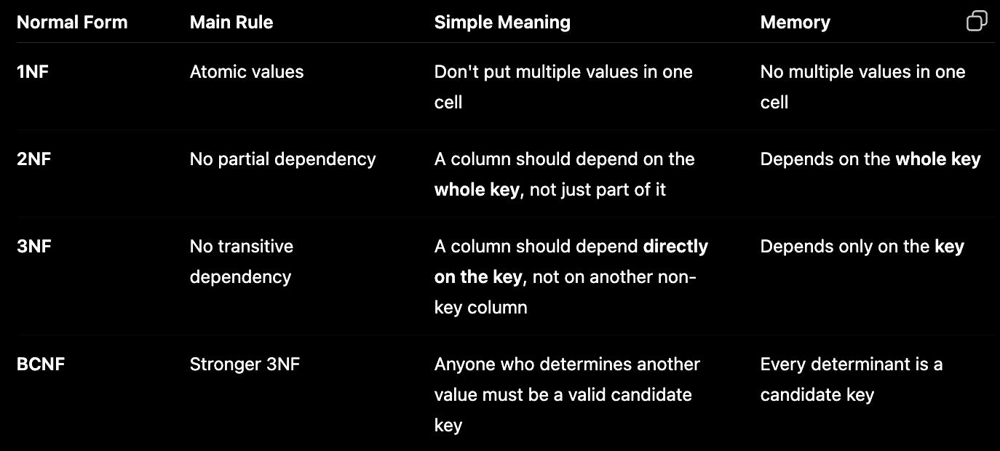 |
| Denormalization |
Denormalization is a database optimization technique where you
intentionally add redundant data to a table to speed up read
operations and simplify complex queries.
|
| Optimistic vs Pessimistic Lock |
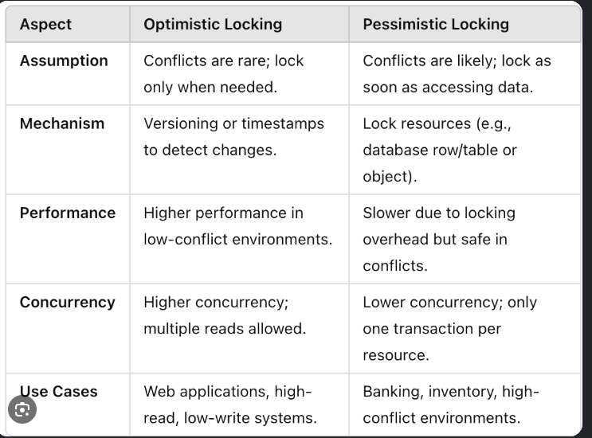 |
| Distributed Transactions |
A transaction involving multiple independent databases or services.
|
| 2PC |
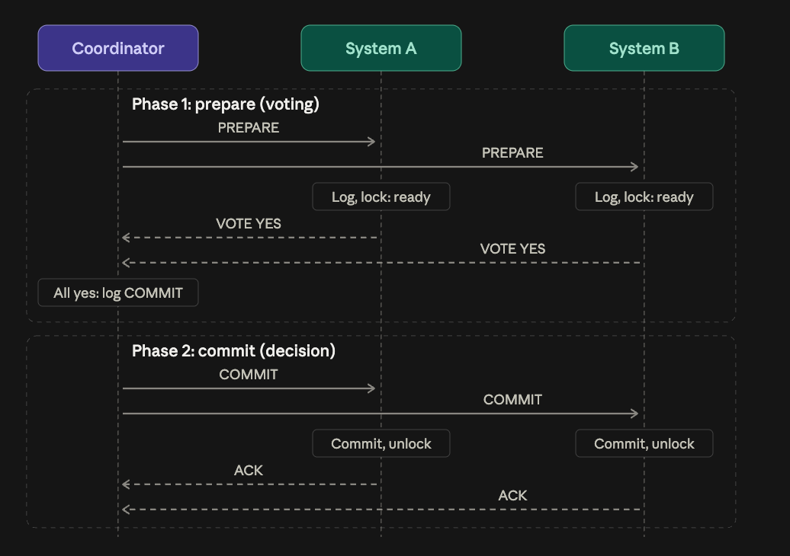
Interview Point:
A system that voted YES and then loses the coordinator is
uncertain. It can't commit because another system might have
voted NO. It can't abort either because the coordinator might have
decided to commit. It has to block until the coordinator recovers.
|
| 3PC |
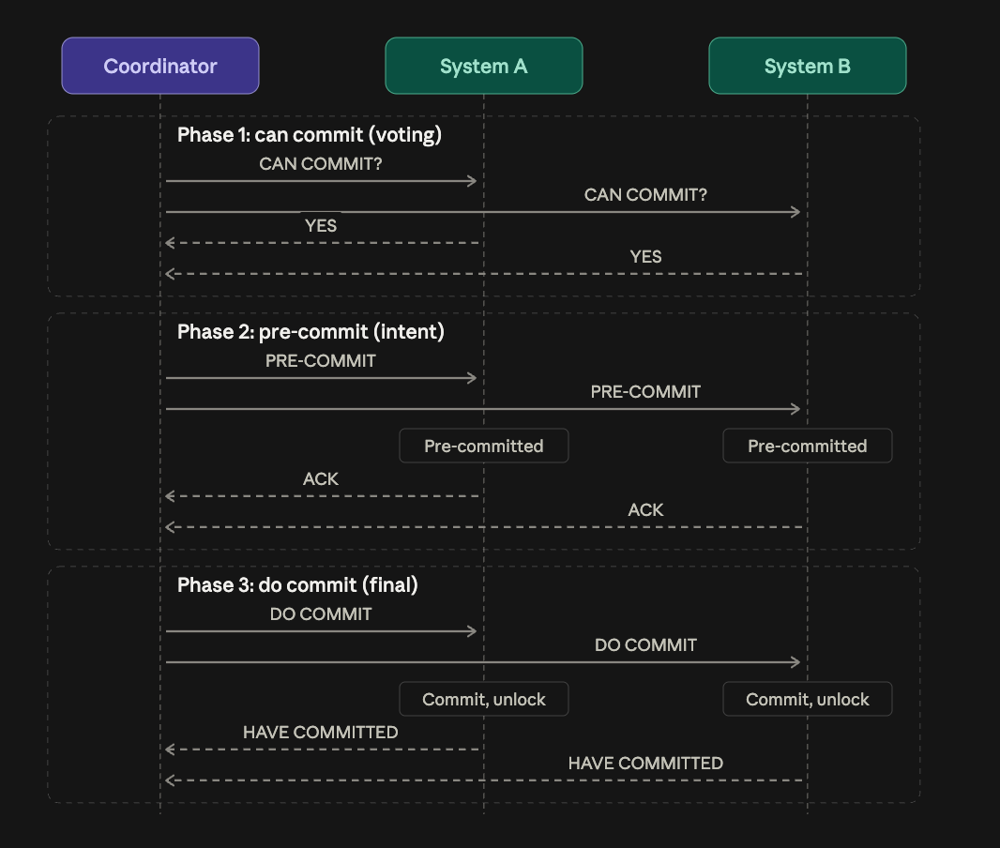 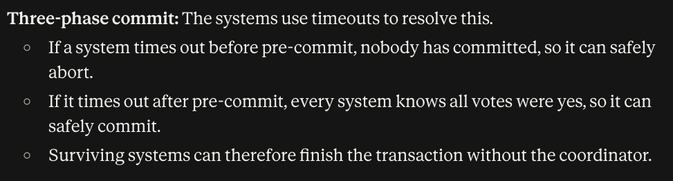 |
| SAGA Design Pattern |
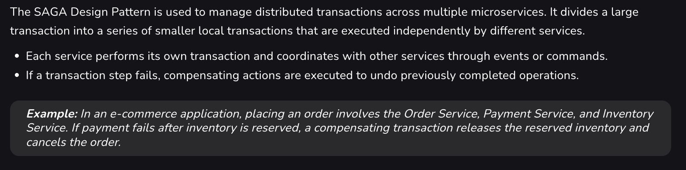 |
| SAGA Choreography |
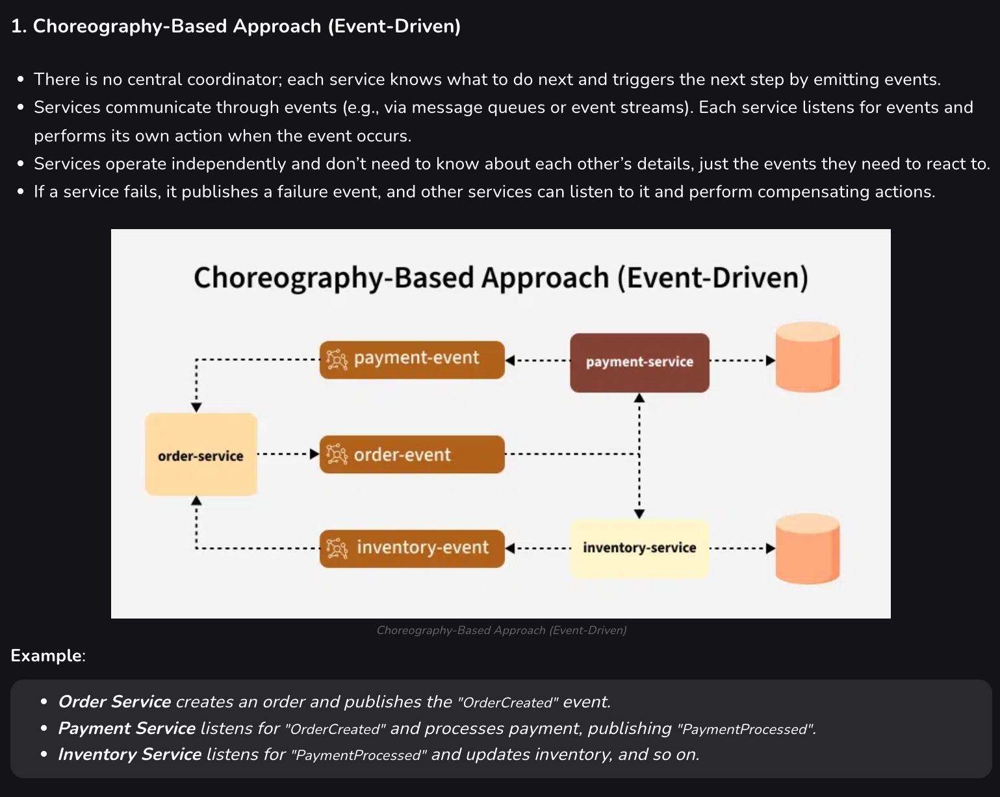 |
| SAGA Orchestrator |
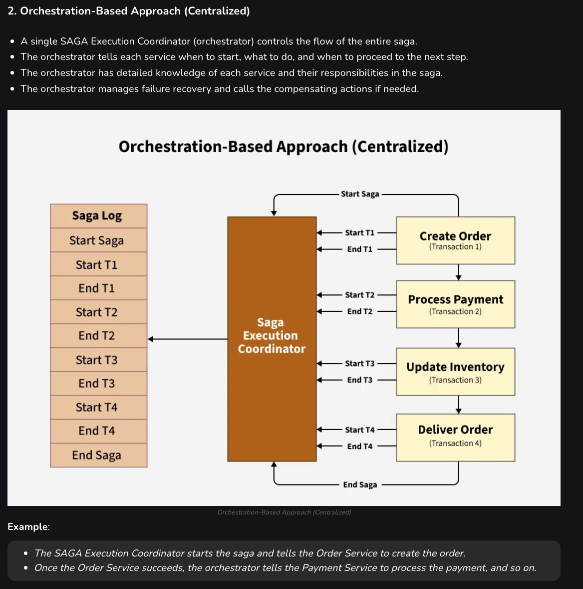 |
| Orchestrator vs Choreography |
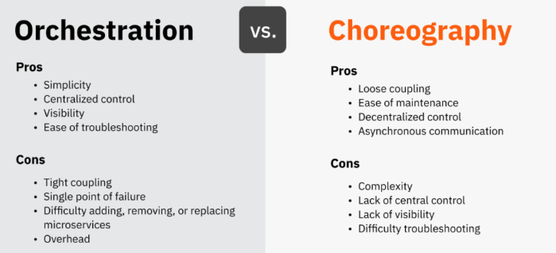 |
| Sharding |
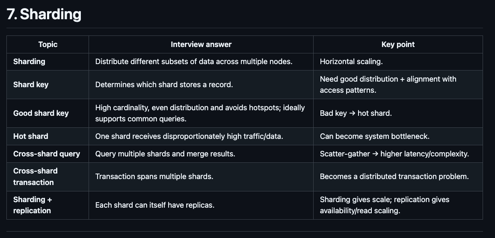 |
| Consistent Hashing |
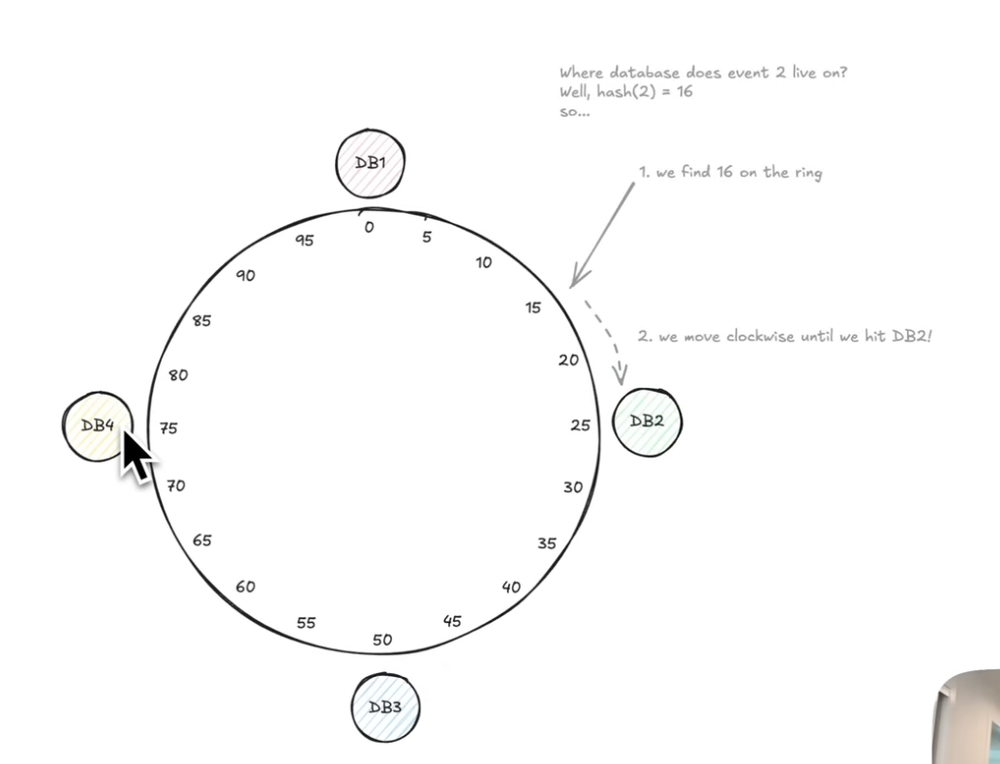 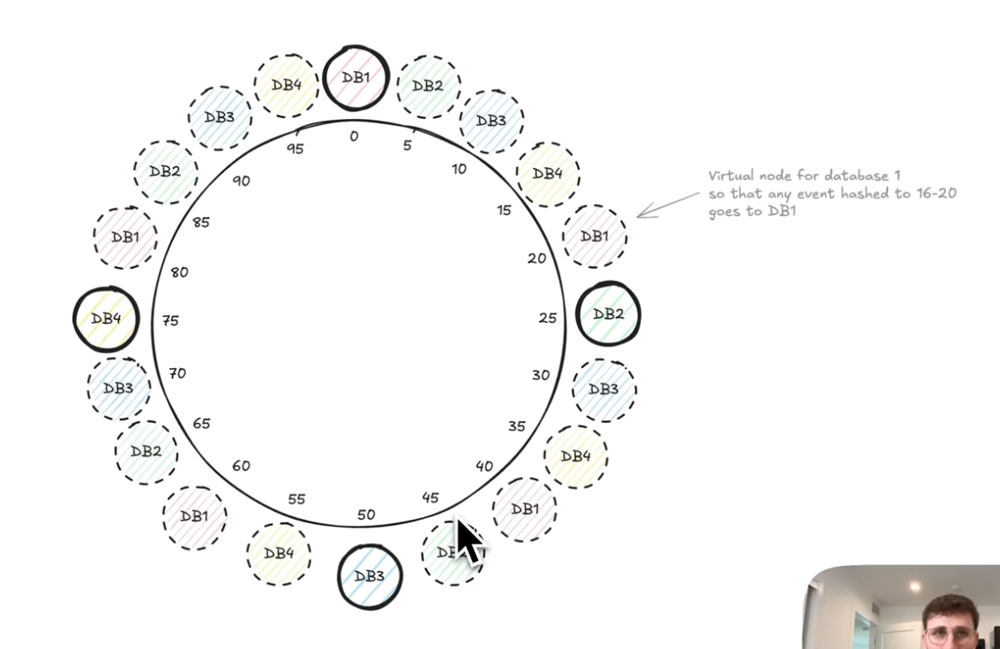 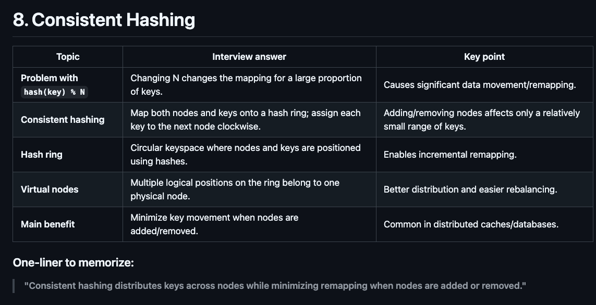 |
| Database Federation |
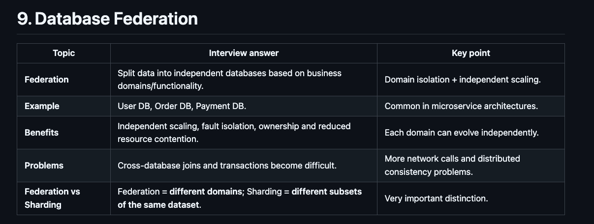 |